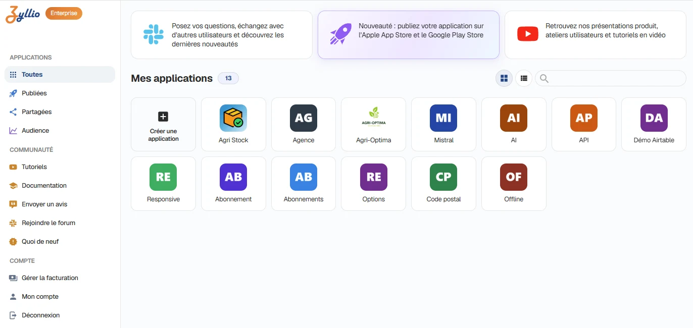

Dashboard
The dashboard serves as the central control point for managing your application creation space. This page provides you with quick access to essential features, making it easier to manage your applications and navigate through the different aspects of the platform.

My applications
The dashboard home page displays your applications as a grid or a list, with a search field to find them quickly. At the top of the page, three panels give access to the forum, the latest news and the video tutorials.
Available actions
- Create a new application with the "Créer une application" (Create an application) tile
- Delete an existing application
- Clone an application to save development time or make a backup
- Edit the settings and features of each application
Published applications
The "Publiées" (Published) menu lets you view and manage your published applications.
Features
- Complete list of published applications and their statuses
- Publication dates
- Direct link to the applications
Shared applications
The "Partagées" (Shared) menu gathers shared applications, to collaborate with other creators and extend the features of your own projects.
Possibilities
- Access applications shared by other users
- Collaborate on joint projects
- Share your applications to encourage collaboration
Audience
The "Audience" menu presents analytical data to understand user behavior and application performance, and to make informed decisions. Track usage statistics and make sure your users always enjoy the best experience.
Available analyses
- Tracking of usage and installations of your applications
- Tracking of active users
- Feature performance evaluation
Community
The "Communauté" (Community) section of the menu gathers resources to learn and exchange.
- Tutoriels (Tutorials): the video tutorials to master each feature, from building applications to integrating third-party systems.
- Documentation: detailed information on every aspect of the platform, to guide you at each step.
- Envoyer un avis (Send feedback): report a bug or a malfunction, and share your suggestions. All feedback is read.
- Rejoindre le forum (Join the forum): ask your questions, exchange with other users and discover the latest news.
- Quoi de neuf (What's new): announcements of new features, tips and best practices.
Account
The "Compte" (Account) section manages your workspace.
- Gérer la facturation (Manage billing): your subscription and invoices.
- Mon compte (My account): your account information.
- Déconnexion (Log out): end your session.